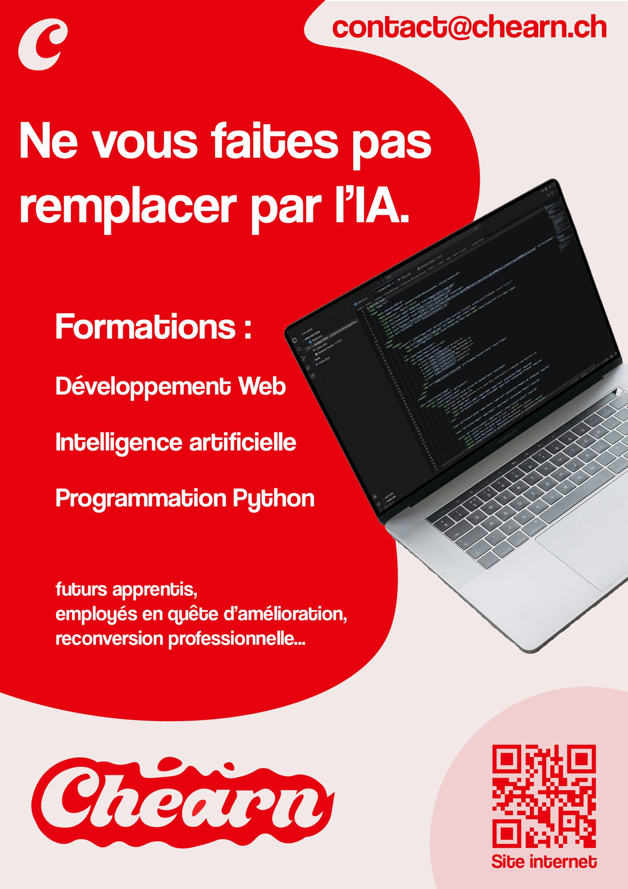

→
L'affiche
« Ne vous faites pas remplacer par l'IA. » L'accroche détourne la peur actuelle de l'IA en argument d'inscription. Les formations, la cible et le QR code complètent le message, mais c'est la phrase qui capte l'attention.
